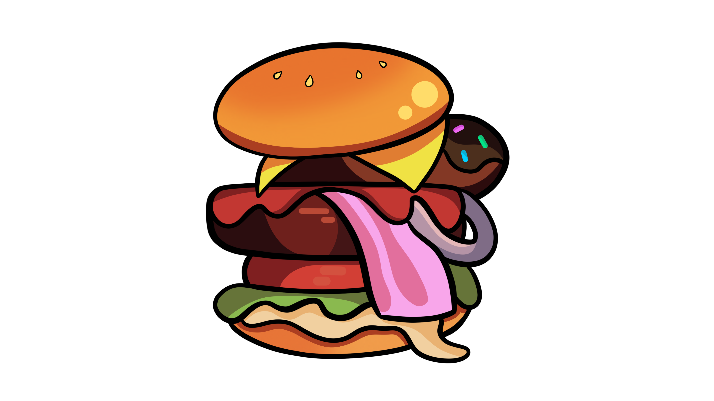
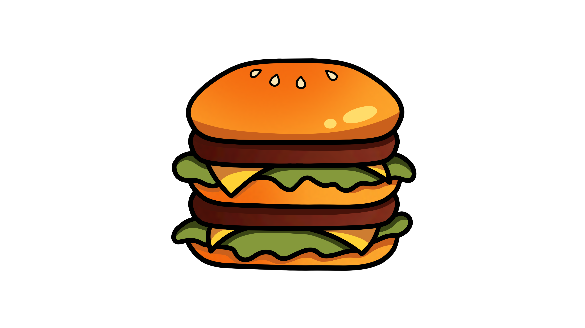
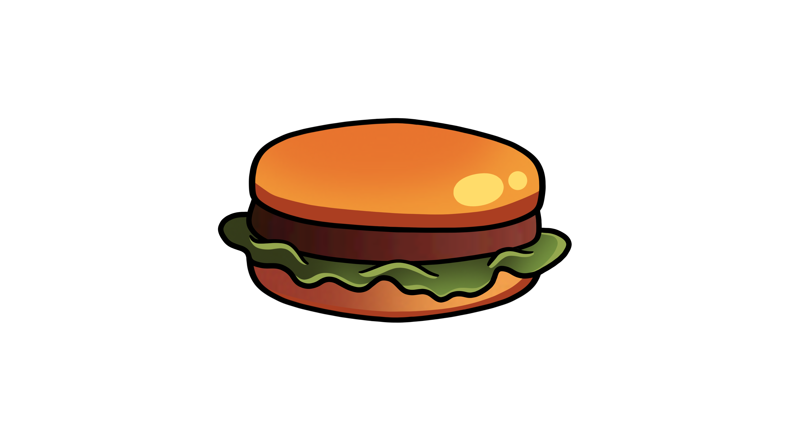
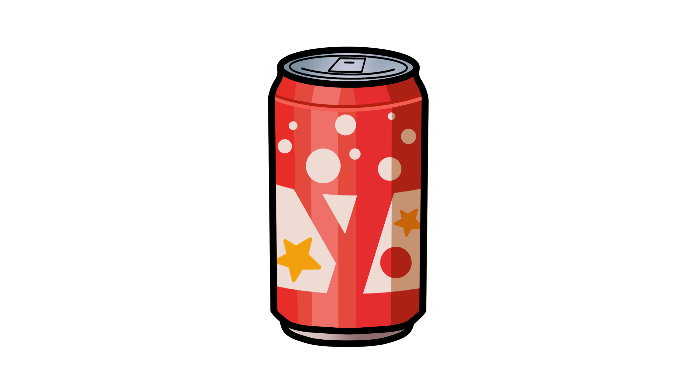
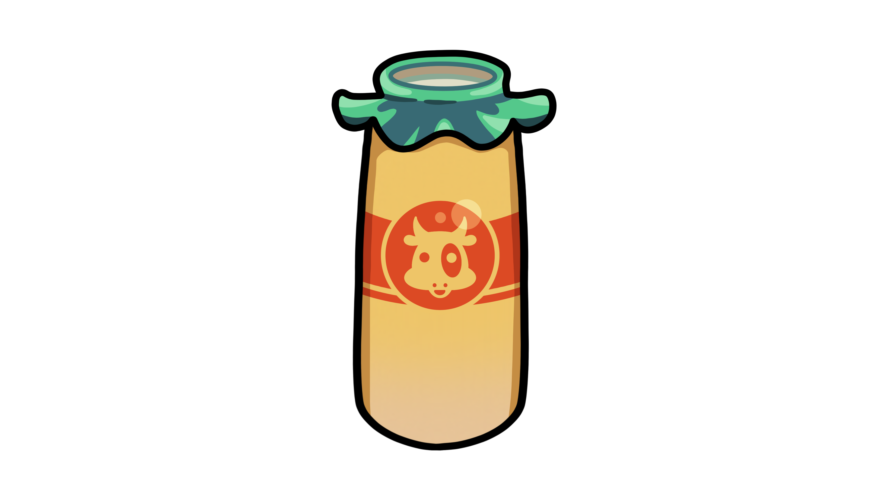

Nom-Burger Digital Icon
This digital icon is from the video game franchise “Yo-Kai Watch”. Inspired straight from the game, this icon can be used as a custom icon for desktop, website, or other personal use.
Double Burger Digital Icon
This digital icon is from the video game franchise “Yo-Kai Watch”. Inspired straight from the game, this icon can be used as a custom icon for desktop, website, or other personal use.
Burger Digital Icon
This digital icon is from the video game franchise “Yo-Kai Watch”. Inspired straight from the game, this icon can be used as a custom icon for desktop, website, or other personal use.
Cola Digital Icon
This digital icon is from the video game franchise “Yo-Kai Watch”. Inspired straight from the game, this icon can be used as a custom icon for desktop, website, or other personal use.
Fruit Milk Digital Icon
This digital icon is from the video game franchise “Yo-Kai Watch”. Inspired straight from the game, this icon can be used as a custom icon for desktop, website, or other personal use.